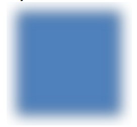
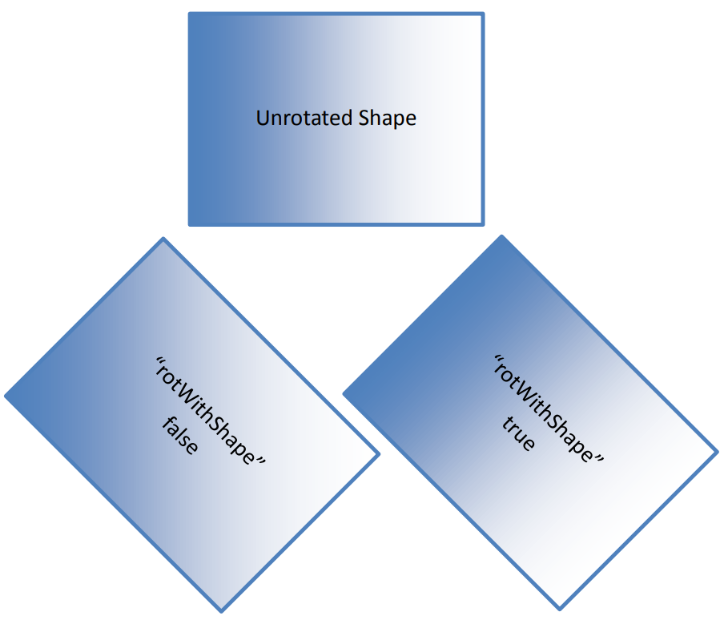

20.1.8 形状填充、效果和线条属性¶
DrawingML 框架的这一部分描述了定义形状和线条的视觉外观的效果。 形状可以通过多种方式填充，包括图像、纯色、渐变或图案填充。 此外，多种视觉效果可以改变形状的外观，并且多种效果可以组合在一起。 线条还可以具有定义其渲染方式的特殊属性，包括线条末端的虚线外观或装饰。 本节记录了定义形状和线条的这些属性和效果的元素。
Shape Fills, Effects, And Line Properties
This portion of the DrawingML framework describes effects defining the visual appearance of shapes and lines. Shapes can be filled in a variety of ways, with images, solid colors, gradients, or pattern fills. In addition, several visual effects can alter the appearance of a shape, and multiple effects can be combined together. Lines also can have special properties defining how they are rendered, included a dashed appearance or decorations at the line ends. This section documents the elements that define these properties and effects for shapes and lines.
20.1.8.1 alphaBiLevel (阿尔法双水平效应)¶
该元素代表 阿尔法双水平效应。
小于阈值的 Alpha（不透明度）值将更改为 0（完全透明），大于或等于阈值的 Alpha 值将更改为 100%（完全不透明）。
| Attributes | Description |
|---|---|
| thresh (临界点) | 指定 alpha 双水平效应的阈值. 该属性的可能值由 ST_PositiveFixedPercentage 简单类型定义 (§20.1.10.45). |
[Note: 该元素内容模型 (CT_AlphaBiLevelEffect) 的 W3C XML 架构定义位于 §A.4.1 中。 end note]
alphaBiLevel (Alpha Bi-Level Effect)
This element represents an Alpha Bi-Level Effect.
Alpha (Opacity) values less than the threshold are changed to 0 (fully transparent) and alpha values greater than or equal to the threshold are changed to 100% (fully opaque).
| Attributes | Description |
|---|---|
| thresh (Threshold) | Specifies the threshold value for the alpha bi-level effect. The possible values for this attribute are defined by the ST_PositiveFixedPercentage simple type (§20.1.10.45). |
[Note: The W3C XML Schema definition of this element’s content model (CT_AlphaBiLevelEffect) is located in §A.4.1. end note]
20.1.8.2 alphaCeiling (阿尔法天花板效应)¶
该元素代表阿尔法天花板效应。
大于零的 Alpha（不透明度）值将更改为 100%。 换句话说，任何部分不透明的东西都会变得完全不透明。
[Note: 该元素内容模型 (CT_AlphaCeilingEffect) 的 W3C XML 架构定义位于 §A.4.1 中。 end note]
alphaCeiling (Alpha Ceiling Effect)
This element represents an alpha ceiling effect.
Alpha (opacity) values greater than zero are changed to 100%. In other words, anything partially opaque becomes fully opaque.
[Note: The W3C XML Schema definition of this element’s content model (CT_AlphaCeilingEffect) is located in §A.4.1. end note]
20.1.8.3 alphaFloor (阿尔法地板效应)¶
该元素代表阿尔法地板效应。
小于 100% 的 Alpha（不透明度）值将更改为零。 换句话说，任何部分透明的东西都会变得完全透明。
[Note: 该元素内容模型 (CT_AlphaFloorEffect) 的 W3C XML 架构定义位于 §A.4.1 中。 end note]
alphaFloor (Alpha Floor Effect)
This element represents an alpha floor effect.
Alpha (opacity) values less than 100% are changed to zero. In other words, anything partially transparent becomes fully transparent.
[Note: The W3C XML Schema definition of this element’s content model (CT_AlphaFloorEffect) is located in §A.4.1. end note]
20.1.8.4 alphaInv (阿尔法逆效应)¶
该元素代表阿尔法逆效应。
Alpha（不透明度）值通过从 100% 中减去来反转。
[Note: 该元素内容模型 (CT_AlphaInverseEffect) 的 W3C XML 架构定义位于 §A.4.1 中。 end note]
alphaInv (Alpha Inverse Effect)
This element represents an alpha inverse effect.
Alpha (opacity) values are inverted by subtracting from 100%.
[Note: The W3C XML Schema definition of this element’s content model (CT_AlphaInverseEffect) is located in §A.4.1. end note]
20.1.8.5 alphaMod (阿尔法调制效果)¶
该元素代表 alpha 调制效果.
效果 alpha（不透明度）值乘以固定百分比。 效果容器指定包含要调制的 alpha 值的效果。
[Note: 该元素内容模型 (CT_AlphaModulateEffect) 的 W3C XML 架构定义位于 §A.4.1 中。 end note]
alphaMod (Alpha Modulate Effect)
This element represents an alpha modulate effect.
Effect alpha (opacity) values are multiplied by a fixed percentage. The effect container specifies an effect containing alpha values to modulate.
[Note: The W3C XML Schema definition of this element’s content model (CT_AlphaModulateEffect) is located in §A.4.1. end note]
20.1.8.6 alphaModFix (Alpha 调制固定效果)¶
该元素代表阿尔法调制固定效应。
效果 alpha（不透明度）值乘以固定百分比。
| Attributes | Description |
|---|---|
| amt (数量) | 指定缩放 Alpha 的百分比量. 该属性的可能值由 ST_PositivePercentage 简单类型定义 (§20.1.10.46). |
[Note: 该元素内容模型 (CT_AlphaModulateFixedEffect) 的 W3C XML 架构定义位于 §A.4.1. end note]
alphaModFix (Alpha Modulate Fixed Effect)
This element represents an alpha modulate fixed effect.
Effect alpha (opacity) values are multiplied by a fixed percentage.
| Attributes | Description |
|---|---|
| amt (Amount) | Specifies the percentage amount to scale the alpha. The possible values for this attribute are defined by the ST_PositivePercentage simple type (§20.1.10.46). |
[Note: The W3C XML Schema definition of this element’s content model (CT_AlphaModulateFixedEffect) is located in §A.4.1. end note]
20.1.8.7 alphaOutset (Alpha 插入/切出效果)¶
该元素指定 Alpha 开始/插入效果。
这相当于 alpha 上限，然后是 alpha 模糊，然后是 alpha 上限（正半径）或 alpha 下限（负半径）。
| Attributes | Description |
|---|---|
| rad (半径) | 指定起始/插入的半径. 该属性的可能值由 ST_Cooperative 简单类型定义 (§20.1.10.16). |
[Note: 该元素内容模型 (CT_AlphaOutsetEffect) 的 W3C XML 架构定义位于 §A.4.1. end note]
alphaOutset (Alpha Inset/Outset Effect)
This element specifies an alpha outset/inset effect.
This is equivalent to an alpha ceiling, followed by alpha blur, followed by either an alpha ceiling (positive radius) or alpha floor (negative radius).
| Attributes | Description |
|---|---|
| rad (Radius) | Specifies the radius of outset/inset. The possible values for this attribute are defined by the ST_Coordinate simple type (§20.1.10.16). |
[Note: The W3C XML Schema definition of this element’s content model (CT_AlphaOutsetEffect) is located in §A.4.1. end note]
20.1.8.8 alphaRepl (Alpha 替换效果)¶
该元素指定 alpha 替换效果。
效果 alpha（不透明度）值被固定 alpha 替换。
| Attributes | Description |
|---|---|
| a (Alpha) | 指定新的不透明度值. 该属性的可能值由 ST_PositiveFixedPercentage 简单类型定义 (§20.1.10.45). |
[Note: The W3C XML Schema definition of this element’s content model (CT_AlphaReplaceEffect) is located in §A.4.1. end note]
alphaRepl (Alpha Replace Effect)
This element specifies an alpha replace effect.
Effect alpha (opacity) values are replaced by a fixed alpha.
| Attributes | Description |
|---|---|
| a (Alpha) | Specifies the new opacity value. The possible values for this attribute are defined by the ST_PositiveFixedPercentage simple type (§20.1.10.45). |
[Note: The W3C XML Schema definition of this element’s content model (CT_AlphaReplaceEffect) is located in §A.4.1. end note]
20.1.8.9 bevel (线连接斜角)¶
该元素指定斜角线连接。
斜角接头指定使用角度接头来连接线条。
Example

[Note: 该元素内容模型 (CT_LineJoinBevel) 的 W3C XML 模式定义位于 §A.4.1 中。 end note]
bevel (Line Join Bevel)
This element specifies a Bevel Line Join.
A bevel joint specifies that an angle joint is used to connect lines.
Example
[Note: The W3C XML Schema definition of this element’s content model (CT_LineJoinBevel) is located in §A.4.1. end note]
20.1.8.10 bgClr (背景颜色)¶
该元素指定图案填充的背景颜色。
[Note: 该元素内容模型 (CT_Color) 的 W3C XML 架构定义位于 §A.4.1. end note]
bgClr (Background color)
This element specifies the background color of a Pattern fill.
[Note: The W3C XML Schema definition of this element’s content model (CT_Color) is located in §A.4.1. end note]
20.1.8.11 biLevel (双层（黑/白）效果)¶
该元素指定双层（黑/白）效果。 亮度低于指定阈值的输入颜色将更改为黑色。 亮度大于或等于指定值的输入颜色设置为白色。 Alpha 效果值不受此效果的影响。
| Attributes | Description |
|---|---|
| thresh (临界点) | 指定 Bi-Level 效果的亮度阈值。 大于或等于阈值的值设置为白色。 小于阈值的值设置为黑色. 该属性的可能值由 ST_PositiveFixedPercentage 简单类型定义 (§20.1.10.45). |
[Note: 该元素内容模型 (CT_BiLevelEffect) 的 W3C XML 架构定义位于 §A.4.1. end note]
biLevel (Bi-Level (Black/White) Effect)
This element specifies a bi-level (black/white) effect. Input colors whose luminance is less than the specified threshold value are changed to black. Input colors whose luminance are greater than or equal the specified value are set to white. The alpha effect values are unaffected by this effect.
| Attributes | Description |
|---|---|
| thresh (Threshold) | Specifies the luminance threshold for the Bi-Level effect. Values greater than or equal to the threshold are set to white. Values lesser than the threshold are set to black. The possible values for this attribute are defined by the ST_PositiveFixedPercentage simple type (§20.1.10.45). |
[Note: The W3C XML Schema definition of this element’s content model (CT_BiLevelEffect) is located in §A.4.1. end note]
20.1.8.12 blend (混合效果)¶
该元素指定了多种效果的混合。 容器指定要混合的原始效果，而混合模式则指定如何混合效果。
| Attributes | Description |
|---|---|
| blend (混合模式) | 指定如何混合两种效果. 该属性的可能值由 ST_BlendMode 简单类型定义 (§20.1.10.11). |
[Note: 该元素内容模型 (CT_BlendEffect) 的 W3C XML 架构定义位于 §A.4.1. end note]
blend (Blend Effect)
This element specifies a blend of several effects. The container specifies the raw effects to blend while the blend mode specifies how the effects are to be blended.
| Attributes | Description |
|---|---|
| blend (Blend Mode) | Specifies how to blend the two effects. The possible values for this attribute are defined by the ST_BlendMode simple type (§20.1.10.11). |
[Note: The W3C XML Schema definition of this element’s content model (CT_BlendEffect) is located in §A.4.1. end note]
20.1.8.13 blip (光点)¶
该元素指定图像（二进制大图像或图片）的存在并包含对图像数据的引用。
| Attributes | Description |
|---|---|
| cstate (压缩状态) | 指定存储图片的压缩状态。 这允许应用程序指定已应用于图片的压缩量. 该属性的可能值由 ST_BlipCompression 简单类型定义 (§20.1.10.12). |
| embed (嵌入图片引用/Embedded Picture Reference) Namespace: http://purl.oclc.org/ooxml/officeDocument/relationships | 指定嵌入图片的标识信息。 该属性用于指定驻留在文件本地的图像. 该属性的可能值由 ST_RelationshipId 简单类型定义 (§22.8.2.1). |
| link (链接图片引用/Linked Picture Reference) Namespace: http://purl.oclc.org/ooxml/officeDocument/relationships | 指定链接图片的标识信息。 该属性用于指定不驻留在该文件中的图像. 该属性的可能值由 ST_RelationshipId 简单类型定义 (§22.8.2.1). |
[Note: 该元素内容模型 (CT_Blip) 的 W3C XML 架构定义位于 §A.4.1. end note]
blip (Blip)
This element specifies the existence of an image (binary large image or picture) and contains a reference to the image data.
| Attributes | Description |
|---|---|
| cstate (Compression State) | Specifies the compression state with which the picture is stored. This allows the application to specify the amount of compression that has been applied to a picture. The possible values for this attribute are defined by the ST_BlipCompression simple type (§20.1.10.12). |
| embed (Embedded Picture Reference) Namespace: http://purl.oclc.org/ooxml/officeDocument/relationships | Specifies the identification information for an embedded picture. This attribute is used to specify an image that resides locally within the file. The possible values for this attribute are defined by the ST_RelationshipId simple type (§22.8.2.1). |
| link (Linked Picture Reference) Namespace: http://purl.oclc.org/ooxml/officeDocument/relationships | Specifies the identification information for a linked picture. This attribute is used to specify an image that does not reside within this file. The possible values for this attribute are defined by the ST_RelationshipId simple type (§22.8.2.1). |
[Note: The W3C XML Schema definition of this element’s content model (CT_Blip) is located in §A.4.1. end note]
20.1.8.14 blipFill (图片填充)¶
该元素指定图片对象具有的图片填充类型。 由于默认情况下图片已具有图片填充，因此可以为图片对象指定两种填充。 下面显示了一个示例。
Example
考虑下面应用了斑点填充的图片。 用于填充该图片对象的图像具有透明像素而不是白色像素。
<p:pic>
…
<p:blipFill>
<a:blip r:embed="rId2"/>
<a:stretch>
<a:fillRect/>
</a:stretch>
</p:blipFill>
…
</p:pic>

上面的图片对象显示为该填充类型的示例.
Example
现在考虑相同的图片对象，但在图片的形状属性部分应用了额外的渐变填充。
<p:pic>
…
<p:blipFill>
<a:blip r:embed="rId2"/>
<a:stretch>
<a:fillRect/>
</a:stretch>
</p:blipFill>
<p:spPr>
<a:gradFill>
<a:gsLst>
<a:gs pos="0">
<a:schemeClr val="tx2">
<a:shade val="50000"/>
</a:schemeClr>
</a:gs>
<a:gs pos="39999">
<a:schemeClr val="tx2">
<a:tint val="20000"/>
</a:schemeClr>
</a:gs>
<a:gs pos="70000">
<a:srgbClr val="C4D6EB"/>
</a:gs>
<a:gs pos="100000">
<a:schemeClr val="bg1"/>
</a:gs>
</a:gsLst>
</a:gradFill>
</p:spPr>
…
</p:pic>

上面的图片对象显示为这种双重填充类型的示例.
| Attributes | Description |
|---|---|
| dpi (DPI 设置) | 指定用于计算光点大小的 DPI（每英寸点数）。 如果不存在或为零，则使用 blip 中的 DPI. [Note: 该属性主要用于跟踪文档中的图片质量。 打印所需的质量水平与屏幕上查看的质量水平不同，因此需要跟踪此信息。 end note] 此属性的可能值由 W3C XML 架构 unsignedInt 数据类型定义. |
| rotWithShape (随形状旋转) | 指定填充应随形状旋转。 也就是说，当已填充图片的形状和包含的形状（例如矩形）通过旋转进行变换时，填充也会以相同的旋转进行变换. 该属性的可能值由 W3C XML Schema 布尔数据类型定义. |
[Note: 该元素内容模型 (CT_BlipFillProperties) 的 W3C XML 架构定义位于 §A.4.1. end note]
blipFill (Picture Fill)
This element specifies the type of picture fill that the picture object has. Because a picture has a picture fill already by default, it is possible to have two fills specified for a picture object. An example of this is shown below.
Example
Consider the picture below that has a blip fill applied to it. The image used to fill this picture object has transparent pixels instead of white pixels.
<p:pic>
…
<p:blipFill>
<a:blip r:embed="rId2"/>
<a:stretch>
<a:fillRect/>
</a:stretch>
</p:blipFill>
…
</p:pic>
The above picture object is shown as an example of this fill type.
Example
Consider now the same picture object but with an additional gradient fill applied within the shape properties portion of the picture.
<p:pic>
…
<p:blipFill>
<a:blip r:embed="rId2"/>
<a:stretch>
<a:fillRect/>
</a:stretch>
</p:blipFill>
<p:spPr>
<a:gradFill>
<a:gsLst>
<a:gs pos="0">
<a:schemeClr val="tx2">
<a:shade val="50000"/>
</a:schemeClr>
</a:gs>
<a:gs pos="39999">
<a:schemeClr val="tx2">
<a:tint val="20000"/>
</a:schemeClr>
</a:gs>
<a:gs pos="70000">
<a:srgbClr val="C4D6EB"/>
</a:gs>
<a:gs pos="100000">
<a:schemeClr val="bg1"/>
</a:gs>
</a:gsLst>
</a:gradFill>
</p:spPr>
…
</p:pic>
The above picture object is shown as an example of this double fill type.
| Attributes | Description |
|---|---|
| dpi (DPI Setting) | Specifies the DPI (dots per inch) used to calculate the size of the blip. If not present or zero, the DPI in the blip is used. [Note: This attribute is primarily used to keep track of the picture quality within a document. There are different levels of quality needed for print than on-screen viewing and thus a need to track this information. end note] The possible values for this attribute are defined by the W3C XML Schema unsignedInt datatype. |
| rotWithShape (Rotate With Shape) | Specifies that the fill should rotate with the shape. That is, when the shape that has been filled with a picture and the containing shape (say a rectangle) is transformed with a rotation then the fill is transformed with the same rotation. The possible values for this attribute are defined by the W3C XML Schema boolean datatype. |
[Note: The W3C XML Schema definition of this element’s content model (CT_BlipFillProperties) is located in §A.4.1. end note]
20.1.8.15 blur (模糊效果)¶
该元素指定应用于整个形状（包括其填充）的模糊效果。 所有颜色通道（包括 Alpha）都会受到影响。
| Attributes | Description |
|---|---|
| grow (成长界限) | 指定对象的边界是否应因模糊而增大。 True 表示边界已增长，而 false 表示边界未增长. [Example: 当grow设置为false时，模糊效果不会超出对象的原始边界: 当grow设置为true时，模糊效果可以延伸到对象的原始边界之外:  end example] 该属性的可能值由 W3C XML Schema 布尔数据类型定义. |
| rad (半径/Radius) | 指定模糊半径. 该属性的可能值由 ST_PositiveCooperative 简单类型定义 (§20.1.10.41). |
{kind=link}
{kind=link}
[Note: 该元素内容模型 (CT_BlurEffect) 的 W3C XML 架构定义位于 §A.4.1. end note]
blur (Blur Effect)
This element specifies a blur effect that is applied to the entire shape, including its fill. All color channels, including alpha, are affected.
[Note: The W3C XML Schema definition of this element’s content model (CT_BlurEffect) is located in §A.4.1. end note]
20.1.8.16 clrChange (变色效果)¶
该元素指定颜色变化效果。 clrFrom 的实例替换为 clrTo 的实例。
| Attributes | Description |
|---|---|
| useA (考虑阿尔法值) | 指定效果是否考虑 alpha 值。 如果 useA 为 true，则考虑效果 alpha 值，否则将忽略它们. 该属性的可能值由 W3C XML Schema 布尔数据类型定义. |
[Note: 该元素内容模型 (CT_ColorChangeEffect) 的 W3C XML 架构定义位于 §A.4.1. end note]
clrChange (Color Change Effect)
This element specifies a Color Change Effect. Instances of clrFrom are replaced with instances of clrTo.
| Attributes | Description |
|---|---|
| useA (Consider Alpha Values) | Specifies whether alpha values are considered for the effect. Effect alpha values are considered if useA is true, else they are ignored. The possible values for this attribute are defined by the W3C XML Schema boolean datatype. |
[Note: The W3C XML Schema definition of this element’s content model (CT_ColorChangeEffect) is located in §A.4.1. end note]
20.1.8.17 clrFrom (改变原始颜色)¶
此元素指定在颜色更改效果中删除的颜色。 它是“from”或源输入颜色.
[Note: The W3C XML Schema definition of this element’s content model (CT_Color) is located in §A.4.1. end note]
clrFrom (Change Color From)
This element specifies a color getting removed in a color change effect. It is the "from" or source input color.
[Note: The W3C XML Schema definition of this element’s content model (CT_Color) is located in §A.4.1. end note]
20.1.8.18 clrRepl (纯色更换)¶
该元素指定纯色替换值。 所有效果颜色都更改为固定颜色。 Alpha 值不受影响。
[Note: The W3C XML Schema definition of this element’s content model (CT_ColorReplaceEffect) is located in §A.4.1. end note]
clrRepl (Solid Color Replacement)
This element specifies a solid color replacement value. All effect colors are changed to a fixed color. Alpha values are unaffected.
[Note: The W3C XML Schema definition of this element’s content model (CT_ColorReplaceEffect) is located in §A.4.1. end note]
20.1.8.19 clrTo (改变目标颜色)¶
此元素指定在 clrChange 效果中替换 clrFrom 的颜色。 这是颜色变化效果中的“目标”或“目标”颜色。
[Note: 该元素内容模型 (CT_Color) 的 W3C XML 架构定义位于 §A.4.1. end note]
clrTo (Change Color To)
This element specifies the color which replaces the clrFrom in a clrChange effect. This is the "target" or "to" color in the color change effect.
[Note: The W3C XML Schema definition of this element’s content model (CT_Color) is located in §A.4.1. end note]
20.1.8.20 cont (效果容器)¶
该元素指定一个效果容器。 这是一个效果列表。
| Attributes | Description |
|---|---|
| name (名称) | 为此效果列表指定一个可选名称，以便稍后引用。 在所有效果树和效果容器中应是唯一的. 此属性的可能值由 W3C XML 架构令牌数据类型定义. |
| type (效果容器类型) | 指定容器的类型，兄弟容器或树容器. 该属性的可能值由 ST_EffectContainerType 简单类型定义 (§20.1.10.22). |
[Note: 该元素内容模型 (CT_EffectContainer) 的 W3C XML 架构定义位于 §A.4.1. end note]
cont (Effect Container)
This element specifies an Effect Container. It is a list of effects.
| Attributes | Description |
|---|---|
| name (Name) | Specifies an optional name for this list of effects, so that it can be referred to later. Shall be unique across all effect trees and effect containers. The possible values for this attribute are defined by the W3C XML Schema token datatype. |
| type (Effect Container Type) | Specifies the kind of container, either sibling or tree. The possible values for this attribute are defined by the ST_EffectContainerType simple type (§20.1.10.22). |
[Note: The W3C XML Schema definition of this element’s content model (CT_EffectContainer) is located in §A.4.1. end note]
20.1.8.21 custDash (自定义破折号)¶
该元素指定自定义破折号方案。 它是一个破折号停止元素列表，代表构建自定义破折方案的构建块原子。
[Note: 该元素内容模型 (CT_DashStopList) 的 W3C XML 架构定义位于 §A.4.1. end note]
custDash (Custom Dash)
This element specifies a custom dashing scheme. It is a list of dash stop elements which represent building block atoms upon which the custom dashing scheme is built.
[Note: The W3C XML Schema definition of this element’s content model (CT_DashStopList) is located in §A.4.1. end note]
20.1.8.22 ds (破折号停止)¶
该元素指定破折号停止原语。 冲线方案是通过指定冲线停止原语的有序列表来构建的。 破折号停止基元由破折号和空格组成。
| Attributes | Description |
|---|---|
| d (短划线长度) | 指定虚线相对于线宽的长度. 该属性的可能值由 ST_PositivePercentage 简单类型定义 (§20.1.10.46). |
| sp (Space Length) | 指定相对于线宽的空间长度. 该属性的可能值由 ST_PositivePercentage 简单类型定义 (§20.1.10.46). |
[Note: 该元素内容模型 (CT_DashStop) 的 W3C XML 架构定义位于 §A.4.1 中。 end note]
ds (Dash Stop)
This element specifies a dash stop primitive. Dashing schemes are built by specifying an ordered list of dash stop primitive. A dash stop primitive consists of a dash and a space.
| Attributes | Description |
|---|---|
| d (Dash Length) | Specifies the length of the dash relative to the line width. The possible values for this attribute are defined by the ST_PositivePercentage simple type (§20.1.10.46). |
| sp (Space Length) | Specifies the length of the space relative to the line width. The possible values for this attribute are defined by the ST_PositivePercentage simple type (§20.1.10.46). |
[Note: The W3C XML Schema definition of this element’s content model (CT_DashStop) is located in §A.4.1. end note]
20.1.8.23 duotone (双色调效果)¶
该元素指定双色调效果.
对于每个像素，通过线性插值组合 clr1 和 clr2 以确定该像素的新颜色.
[Note: 该元素内容模型 (CT_DuotoneEffect) 的 W3C XML 架构定义位于 §A.4.1. end note]
duotone (Duotone Effect)
This element specifies a duotone effect.
For each pixel, combines clr1 and clr2 through a linear interpolation to determine the new color for that pixel.
[Note: The W3C XML Schema definition of this element’s content model (CT_DuotoneEffect) is located in §A.4.1. end note]
20.1.8.24 effect (效果)¶
该元素指定对现有效果容器的引用。
| Attributes | Description |
|---|---|
| ref (引用) | 指定参考。 它的值可以是效果容器的名称，或四个特殊引用之一: fill - 指的是填充效果 line - 指的是线条效果 fillLine - 指组合的填充和线条效果 children - 指的是逻辑子形状或文本的综合效果 此属性的可能值由 W3C XML 架构令牌数据类型定义. |
[Note: 该元素内容模型 (CT_EffectReference) 的 W3C XML 架构定义位于 §A.4.1. end note]
effect (Effect)
This element specifies a reference to an existing effect container.
| Attributes | Description |
|---|---|
| ref (Reference) | Specifies the reference. Its value can be the name of an effect container, or one of four special references: fill - refers to the fill effect line - refers to the line effect fillLine - refers to the combined fill and line effects children - refers to the combined effects from logical child shapes or text The possible values for this attribute are defined by the W3C XML Schema token datatype. |
[Note: The W3C XML Schema definition of this element’s content model (CT_EffectReference) is located in §A.4.1. end note]
20.1.8.25 effectDag (效果列表)¶
该元素指定效果列表。 效果按照容器类型（同级或树）指定的顺序应用。
[Note: EffectDag 元素可以包含多个效果容器作为子元素。 具有不同样式的效果容器可以组合在effectDag中，以定义有向无环图（DAG），该图指定所有效果的应用顺序. end note]
| Attributes | Description |
|---|---|
| name (名称) | 为此效果列表指定一个可选名称，以便稍后引用。 在所有效果树和效果容器中应是唯一的. 此属性的可能值由 W3C XML 架构令牌数据类型定义. |
| type (效果容器类型) | 指定容器的类型，兄弟容器或树容器. 该属性的可能值由 ST_EffectContainerType 简单类型定义 (§20.1.10.22). |
[Note: 该元素内容模型 (CT_EffectContainer) 的 W3C XML 架构定义位于 §A.4.1. end note]
effectDag (Effect Container)
This element specifies a list of effects. Effects are applied in the order specified by the container type (sibling or tree).
[Note: An effectDag element can contain multiple effect containers as child elements. Effect containers with different styles can be combined in an effectDag to define a directed acyclic graph (DAG) that specifies the order in which all effects are applied. end note]
| Attributes | Description |
|---|---|
| name (Name) | Specifies an optional name for this list of effects, so that it can be referred to later. Shall be unique across all effect trees and effect containers. The possible values for this attribute are defined by the W3C XML Schema token datatype. |
| type (Effect Container Type) | Specifies the kind of container, either sibling or tree. The possible values for this attribute are defined by the ST_EffectContainerType simple type (§20.1.10.22). |
[Note: The W3C XML Schema definition of this element’s content model (CT_EffectContainer) is located in §A.4.1. end note]
20.1.8.26 effectLst (效果列表)¶
该元素指定效果列表。 effectLst 中的效果由渲染引擎按默认顺序应用。 下图说明了对形状和组形状应用效果的顺序。
[Note: 许多效果的输出不包括输入形状。 对于应应用于先前效果的结果以及原始形状的效果，使用容器将输入分组在一起. end note]
Example
外部阴影同时应用于原始形状和原始形状的发光。 模糊的结果包含原始形状，而发光的结果仅包含添加的发光。 因此，将模糊结果与发光结果分组的容器用作外部阴影的输入。
形状的effectLst处理

组合形状的effectLst处理

[Note: 该元素内容模型 (CT_EffectList) 的 W3C XML 架构定义位于 §A.4.1 中。 end note]
effectLst (Effect Container)
This element specifies a list of effects. Effects in an effectLst are applied in the default order by the rendering engine. The following diagrams illustrate the order in which effects are applied, both for shapes and for group shapes.
[Note: The output of many effects does not include the input shape. For effects that should be applied to the result of previous effects as well as the original shape, a container is used to group the inputs together. end note]
Example
Outer Shadow is applied both to the original shape and the original shape's glow. The result of blur contains the original shape, while the result of glow contains only the added glow. Therefore, a container that groups the blur result with the glow result is used as the input to Outer Shadow.
effectLst Processing for Shapes
effectLst Processing for Group Shapes
[Note: The W3C XML Schema definition of this element’s content model (CT_EffectList) is located in §A.4.1. end note]
20.1.8.27 fgClr (前景色)¶
该元素指定图案填充的前景色。
[Note: 该元素内容模型 (CT_Color) 的 W3C XML 架构定义位于 §A.4.1. end note]
fgClr (Foreground color)
This element specifies the foreground color of a pattern fill.
[Note: The W3C XML Schema definition of this element’s content model (CT_Color) is located in §A.4.1. end note]
20.1.8.28 fill (填充)¶
该元素指定填充，可以是 blipFill、gradFill、grpFill、noFill、pattFill 或 SolidFill 之一.
[Note: 该元素内容模型 (CT_FillEffect) 的 W3C XML 架构定义位于 §A.4.1. end note]
fill (Fill)
This element specifies a fill which is one of blipFill, gradFill, grpFill, noFill, pattFill or solidFill.
[Note: The W3C XML Schema definition of this element’s content model (CT_FillEffect) is located in §A.4.1. end note]
20.1.8.29 fillOverlay (填充叠加效果)¶
该元素指定填充叠加效果。 填充叠加可用于为对象指定附加填充并将两个填充混合在一起。
| Attributes | Description |
|---|---|
| blend (混合) | 指定如何将填充与基本效果混合. 该属性的可能值由 ST_BlendMode 简单类型定义 (§20.1.10.11). |
[Note: 该元素内容模型 (CT_FillOverlayEffect) 的 W3C XML 架构定义位于 §A.4.1. end note]
fillOverlay (Fill Overlay Effect)
This element specifies a fill overlay effect. A fill overlay can be used to specify an additional fill for an object and blend the two fills together.
| Attributes | Description |
|---|---|
| blend (Blend) | Specifies how to blend the fill with the base effect. The possible values for this attribute are defined by the ST_BlendMode simple type (§20.1.10.11). |
[Note: The W3C XML Schema definition of this element’s content model (CT_FillOverlayEffect) is located in §A.4.1. end note]
20.1.8.30 fillRect (填充矩形)¶
该元素指定一个填充矩形。 当指定图像拉伸时，源矩形 srcRect 将缩放以适合指定的填充矩形。
填充矩形的每条边都由相对于形状边界框的相应边的偏移百分比来定义。 正百分比指定插入，负百分比指定开始. [Note: 例如，左偏移 25% 指定填充矩形的左边缘位于边界框左边缘的右侧，偏移量等于边界框宽度的 25%. end note]
Example

<a:blipFill>
<a:blip r:embed="rId2"/>
<a:stretch>
<a:fillRect b="10000" r="25000"/>
</a:stretch>
</a:blipFill>
上面的图像被拉伸以填充整个矩形，除了底部 10% 和最右边的 25% 之外。
| Attributes | Description |
|---|---|
| b (底部偏移) | 指定矩形的底边. 该属性的可能值由 ST_Percentage 简单类型定义 (§20.1.10.40). |
| l (左偏移) | 指定矩形的左边缘. 该属性的可能值由 ST_Percentage 简单类型定义 (§20.1.10.40). |
| r (右偏移) | 指定矩形的右边缘. 该属性的可能值由 ST_Percentage 简单类型定义 (§20.1.10.40). |
| t (顶部偏移) | 指定矩形的顶边. 该属性的可能值由 ST_Percentage 简单类型定义 (§20.1.10.40). |
[Note: 该元素内容模型 (CT_RelativeRect) 的 W3C XML 模式定义位于 §A.4.1. end note]
fillRect (Fill Rectangle)
This element specifies a fill rectangle. When stretching of an image is specified, a source rectangle, srcRect, is scaled to fit the specified fill rectangle.
Each edge of the fill rectangle is defined by a percentage offset from the corresponding edge of the shape's bounding box. A positive percentage specifies an inset, while a negative percentage specifies an outset. [Note: For example, a left offset of 25% specifies that the left edge of the fill rectangle is located to the right of the bounding box's left edge by an amount equal to 25% of the bounding box's width. end note]
Example
<a:blipFill>
<a:blip r:embed="rId2"/>
<a:stretch>
<a:fillRect b="10000" r="25000"/>
</a:stretch>
</a:blipFill>
The above image is stretched to fill the entire rectangle except for the bottom 10% and rightmost 25%.
| Attributes | Description |
|---|---|
| b (Bottom Offset) | Specifies the bottom edge of the rectangle. The possible values for this attribute are defined by the ST_Percentage simple type (§20.1.10.40). |
| l (Left Offset) | Specifies the left edge of the rectangle. The possible values for this attribute are defined by the ST_Percentage simple type (§20.1.10.40). |
| r (Right Offset) | Specifies the right edge of the rectangle. The possible values for this attribute are defined by the ST_Percentage simple type (§20.1.10.40). |
| t (Top Offset) | Specifies the top edge of the rectangle. The possible values for this attribute are defined by the ST_Percentage simple type (§20.1.10.40). |
[Note: The W3C XML Schema definition of this element’s content model (CT_RelativeRect) is located in §A.4.1. end note]
20.1.8.31 fillToRect (填充到矩形)¶
该元素定义中心阴影的“焦点”矩形，相对于填充图块矩形指定。 中心阴影填充整个图块，除了每个属性指定的边距之外。
中心阴影矩形的每个边缘由相对于图块矩形的相应边缘的偏移百分比来定义。 正百分比指定插入，负百分比指定开始. [Note: 例如，左偏移 25% 指定中心阴影矩形的左边缘位于平铺矩形左边缘的右侧，偏移量等于平铺矩形宽度的 25%. end note]
Example

<a:path path="rect">
<a:fillToRect l="50000" r="50000" t="50000" b="50000"/>
</a:path>
在上面的形状中，由 fillToRect 定义的矩形是形状中心的单个点。 这会产生中心阴影聚焦在区域中心点的效果.
Example

<a:path path="rect">
<a:fillToRect l="25000" t="25000" r="25000" b="0"/>
</a:path>
中心阴影占据通过排除最顶部、最左侧和最右侧 25% 的区域而定义的矩形。 因此，渐变填充了该区域剩余的最左边 25%、最上面 25% 和最右边 25%.
| Attributes | Description |
|---|---|
| b (底部偏移) | 指定矩形的底边. 该属性的可能值由 ST_Percentage 简单类型定义 (§20.1.10.40). |
| l (左偏移) | Specifies the left edge of the rectangle. 该属性的可能值由 ST_Percentage 简单类型定义 (§20.1.10.40). |
| r (右偏移) | Specifies the right edge of the rectangle. 该属性的可能值由 ST_Percentage 简单类型定义 (§20.1.10.40). |
| t (顶部偏移) | Specifies the top edge of the rectangle. 该属性的可能值由 ST_Percentage 简单类型定义 (§20.1.10.40). |
[Note: 该元素内容模型 (CT_RelativeRect) 的 W3C XML 模式定义位于 §A.4.1 中。 end note]
fillToRect (Fill To Rectangle)
This element defines the "focus" rectangle for the center shade, specified relative to the fill tile rectangle. The center shade fills the entire tile except the margins specified by each attribute.
Each edge of the center shade rectangle is defined by a percentage offset from the corresponding edge of the tile rectangle. A positive percentage specifies an inset, while a negative percentage specifies an outset. [Note: For example, a left offset of 25% specifies that the left edge of the center shade rectangle is located to the right of the tile rectangle's left edge by an amount equal to 25% of the tile rectangle's width. end note]
Example
<a:path path="rect">
<a:fillToRect l="50000" r="50000" t="50000" b="50000"/>
</a:path>
In the above shape, the rectangle defined by fillToRect is a single point in the center of the shape. This creates the effect of the center shade focusing at a point in the center of the region.
Example
<a:path path="rect">
<a:fillToRect l="25000" t="25000" r="25000" b="0"/>
</a:path>
The center shade occupies the rectangle defined by excluding the topmost, leftmost, and rightmost 25% of the region. Therefore, the gradient fills the remaining leftmost 25%, topmost 25%, and rightmost 25% of the region.
| Attributes | Description |
|---|---|
| b (Bottom Offset) | Specifies the bottom edge of the rectangle. The possible values for this attribute are defined by the ST_Percentage simple type (§20.1.10.40). |
| l (Left Offset) | Specifies the left edge of the rectangle. The possible values for this attribute are defined by the ST_Percentage simple type (§20.1.10.40). |
| r (Right Offset) | Specifies the right edge of the rectangle. The possible values for this attribute are defined by the ST_Percentage simple type (§20.1.10.40). |
| t (Top Offset) | Specifies the top edge of the rectangle. The possible values for this attribute are defined by the ST_Percentage simple type (§20.1.10.40). |
[Note: The W3C XML Schema definition of this element’s content model (CT_RelativeRect) is located in §A.4.1. end note]
20.1.8.32 glow (发光效果)¶
该元素指定发光效果，其中在对象边缘外部添加颜色模糊轮廓.
| Attributes | Description |
|---|---|
| rad (半径) | 指定发光的半径. 该属性的可能值由 ST_PositiveCooperative 简单类型定义 (§20.1.10.41). |
[Note: 该元素内容模型 (CT_GlowEffect) 的 W3C XML 架构定义位于 §A.4.1 中。 end note]
glow (Glow Effect)
This element specifies a glow effect, in which a color blurred outline is added outside the edges of the object.
| Attributes | Description |
|---|---|
| rad (Radius) | Specifies the radius of the glow. The possible values for this attribute are defined by the ST_PositiveCoordinate simple type (§20.1.10.41). |
[Note: The W3C XML Schema definition of this element’s content model (CT_GlowEffect) is located in §A.4.1. end note]
20.1.8.33 gradFill (渐变填充)¶
该元素定义渐变填充。
渐变填充是一种填充，其特征是从一种颜色平滑逐渐过渡到下一种颜色。 最简单的是，它是在两种颜色之间过渡的填充； 或者更一般地说，它可以是任意数量的颜色的过渡。
所需的过渡颜色和位置在渐变停止列表 (gsLst) 子元素中定义。
另一个子元素定义渐变填充的属性（有两种样式 - 线性阴影样式以及路径阴影样式）
{kind=link}
| Attributes | Description |
|---|---|
| flip (平铺翻转) | 指定平铺时翻转渐变的方向. 通常，渐变填充包含包含填充的形状的整个边界框。 然而，使用tileRect元素，可以定义一个小于边界框的“平铺”矩形。 在这种情况下，渐变填充包含在平铺矩形内，并且平铺矩形跨边界框平铺以填充整个区域. 该属性的可能值由 ST_TileFlipMode 简单类型定义 (§20.1.10.86). |
| rotWithShape (随形状旋转) | 指定当形状旋转时填充是否随形状一起旋转. [Example: 以下是翻转属性设置为“x”的填充。 黑色内部矩形表示平铺矩形。 请注意，图块中右侧的相邻矩形已沿 x 轴翻转.  end example] 该属性的可能值由 W3C XML Schema 布尔数据类型定义. |
{kind=link}
[Note: 该元素内容模型 (CT_GradientFillProperties) 的 W3C XML 架构定义位于 §A.4.1. end note]
gradFill (Gradient Fill)
This element defines a gradient fill.
A gradient fill is a fill which is characterized by a smooth gradual transition from one color to the next. At its simplest, it is a fill which transitions between two colors; or more generally, it can be a transition of any number of colors.
The desired transition colors and locations are defined in the gradient stop list (gsLst) child element.
The other child element defines the properties of the gradient fill (there are two styles-- a linear shade style as well as a path shade style)
[Note: The W3C XML Schema definition of this element’s content model (CT_GradientFillProperties) is located in §A.4.1. end note]
20.1.8.34 grayscl (灰度效果)¶
该元素指定灰度效果。 将所有效果颜色值转换为与其亮度相对应的灰色阴影。 效果 alpha（不透明度）值不受影响。
[Note: 该元素内容模型 (CT_GrayscaleEffect) 的 W3C XML 架构定义位于 §A.4.1. end note]
grayscl (Gray Scale Effect)
This element specifies a gray scale effect. Converts all effect color values to a shade of gray, corresponding to their luminance. Effect alpha (opacity) values are unaffected.
[Note: The W3C XML Schema definition of this element’s content model (CT_GrayscaleEffect) is located in §A.4.1. end note]
20.1.8.35 grpFill (组合填充)¶
该元素指定组填充。 指定后，此设置指示父元素是组的一部分，并且应继承该组的填充属性。
[Note: 该元素内容模型 (CT_GroupFillProperties) 的 W3C XML 架构定义位于 §A.4.1 中。 end note]
grpFill (Group Fill)
This element specifies a group fill. When specified, this setting indicates that the parent element is part of a group and should inherit the fill properties of the group.
[Note: The W3C XML Schema definition of this element’s content model (CT_GroupFillProperties) is located in §A.4.1. end note]
20.1.8.36 gs (渐变停止点)¶
该元素定义了一个梯度停止点。 渐变停止点由颜色带中出现停止点的位置组成.
| Attributes | Description |
|---|---|
| pos (位置) | 指定此渐变停止点应出现在色带中的位置。 该位置在[0%, 100%]范围内指定，分别对应色带的开始和结束. 该属性的可能值由 ST_PositiveFixedPercentage 简单类型定义 (§20.1.10.45). |
[Note: 该元素内容模型 (CT_GradientStop) 的 W3C XML 架构定义位于 §A.4.1 中。 end note]
gs (Gradient stops)
This element defines a gradient stop. A gradient stop consists of a position where the stop appears in the color band.
| Attributes | Description |
|---|---|
| pos (Position) | Specifies where this gradient stop should appear in the color band. This position is specified in the range [0%, 100%], which corresponds to the beginning and the end of the color band respectively. The possible values for this attribute are defined by the ST_PositiveFixedPercentage simple type (§20.1.10.45). |
[Note: The W3C XML Schema definition of this element’s content model (CT_GradientStop) is located in §A.4.1. end note]
20.1.8.37 gsLst (渐变停止列表)¶
指定渐变颜色及其在色带中相对位置的渐变停止点列表.
[Note: 该元素内容模型 (CT_GradientStopList) 的 W3C XML 架构定义位于 §A.4.1 中。 end note]
gsLst (Gradient Stop List)
The list of gradient stops that specifies the gradient colors and their relative positions in the color band.
[Note: The W3C XML Schema definition of this element’s content model (CT_GradientStopList) is located in §A.4.1. end note]
20.1.8.38 headEnd (线头/线尾样式)¶
该元素指定可以添加到行首的装饰。
Example

| Attributes | Description |
|---|---|
| len (头/尾长度) | 指定与线宽相关的线端长度. 该属性的可能值由 ST_LineEndLength 简单类型定义 (§20.1.10.32). |
| type (线头/线尾类型) | 指定线端装饰，例如三角形或箭头. 该属性的可能值由 ST_LineEndType 简单类型定义 (§20.1.10.33). |
| w (头/尾宽度) | 指定相对于线宽的线端宽度. 该属性的可能值由 ST_LineEndWidth 简单类型定义 (§20.1.10.34). |
[Note: 该元素内容模型 (CT_LineEndProperties) 的 W3C XML 架构定义位于 §A.4.1. end note]
headEnd (Line Head/End Style)
This element specifies decorations which can be added to the head of a line.
Example
| Attributes | Description |
|---|---|
| len (Length of Head/End) | Specifies the line end length in relation to the line width. The possible values for this attribute are defined by the ST_LineEndLength simple type (§20.1.10.32). |
| type (Line Head/End Type) | Specifies the line end decoration, such as a triangle or arrowhead. The possible values for this attribute are defined by the ST_LineEndType simple type (§20.1.10.33). |
| w (Width of Head/End) | Specifies the line end width in relation to the line width. The possible values for this attribute are defined by the ST_LineEndWidth simple type (§20.1.10.34). |
[Note: The W3C XML Schema definition of this element’s content model (CT_LineEndProperties) is located in §A.4.1. end note]
20.1.8.39 hsl (色相饱和度亮度效果)¶
该元素指定色调/饱和度/亮度效果。 色调、饱和度和亮度均可以相对于其当前值进行调整。
| Attributes | Description |
|---|---|
| hue (色调) | 指定色调调整的度数. 该属性的可能值由 ST_PositiveFixedAngle 简单类型定义 (§20.1.10.44). |
| lum (亮度) | 指定亮度调整的百分比. 该属性的可能值由 ST_FixedPercentage 简单类型定义 (§20.1.10.24). |
| sat (饱和) | 指定饱和度调整的百分比. 该属性的可能值由 ST_FixedPercentage 简单类型定义 (§20.1.10.24). |
[Note: 该属性的可能值由 ST_FixedPercentage 简单类型定义 end note]
hsl (Hue Saturation Luminance Effect)
This element specifies a hue/saturation/luminance effect. The hue, saturation, and luminance can each be adjusted relative to its current value.
| Attributes | Description |
|---|---|
| hue (Hue) | Specifies the number of degrees by which the hue is adjusted. The possible values for this attribute are defined by the ST_PositiveFixedAngle simple type (§20.1.10.44). |
| lum (Luminance) | Specifies the percentage by which the luminance is adjusted. The possible values for this attribute are defined by the ST_FixedPercentage simple type (§20.1.10.24). |
| sat (Saturation) | Specifies the percentage by which the saturation is adjusted. The possible values for this attribute are defined by the ST_FixedPercentage simple type (§20.1.10.24). |
[Note: The W3C XML Schema definition of this element’s content model (CT_HSLEffect) is located in §A.4.1. end note]
20.1.8.40 innerShdw (内阴影效果)¶
该元素指定内部阴影效果。 根据属性给定的参数，在对象的边缘内应用阴影。
Example

| Attributes | Description |
|---|---|
| blurRad (模糊半径) | 指定模糊半径. 该属性的可能值由 ST_PositiveCooperative 简单类型定义 (§20.1.10.41). |
| dir (方向) | 指定偏移阴影的方向. 该属性的可能值由 ST_PositiveFixedAngle 简单类型定义 (§20.1.10.44). |
| dist (距离) | 指定阴影偏移的距离. 该属性的可能值由 ST_PositiveCooperative 简单类型定义 (§20.1.10.41). |
[Note: 该元素内容模型 (CT_InnerShadowEffect) 的 W3C XML 架构定义位于 §A.4.1. end note]
innerShdw (Inner Shadow Effect)
This element specifies an inner shadow effect. A shadow is applied within the edges of the object according to the parameters given by the attributes.
| Attributes | Description |
|---|---|
| blurRad (Blur Radius) | Specifies the blur radius. The possible values for this attribute are defined by the ST_PositiveCoordinate simple type (§20.1.10.41). |
| dir (Direction) | Specifies the direction to offset the shadow. The possible values for this attribute are defined by the ST_PositiveFixedAngle simple type (§20.1.10.44). |
| dist (Distance) | Specifies how far to offset the shadow. The possible values for this attribute are defined by the ST_PositiveCoordinate simple type (§20.1.10.41). |
[Note: The W3C XML Schema definition of this element’s content model (CT_InnerShadowEffect) is located in §A.4.1. end note]
20.1.8.41 lin (线性渐变填充)¶
该元素指定线性渐变.
| Attributes | Description |
|---|---|
| ang (角度) | 指定渐变颜色变化的方向。 要定义该角度，请将其值设为 x 顺时针测量。 那么 ( -sin x, cos x ) 是与渐变填充中恒定颜色线平行的向量. 该属性的可能值由 ST_PositiveFixedAngle 简单类型定义 (§20.1.10.44). |
| scaled (缩放) | 渐变角度是否随填充区域缩放。 从数学上讲，如果此标志为 true，则梯度向量 ( cos x , sin x ) 将按填充区域的宽度 (w) 和高度 (h) 缩放，从而向量变为 ( w cos x, h sin x )（标准化之前）。 现在观察一下，如果渐变角度为 45 度，则渐变向量为 ( w, h )，它从填充区域的左上角到右下角。 如果此标志为 false，则渐变角度与填充区域无关，并且不会使用上述操作进行缩放。 因此 45 度的渐变角总是给出一个渐变带，其恒定颜色线平行于向量 (1, -1). 该属性的可能值由 W3C XML Schema 布尔数据类型定义. |
[Note: 该元素内容模型 (CT_LinearShadeProperties) 的 W3C XML 架构定义位于 §A.4.1 中. end note]
lin (Linear Gradient Fill)
This element specifies a linear gradient.
Example
| Attributes | Description |
|---|---|
| ang (Angle) | Specifies the direction of color change for the gradient. To define this angle, let its value be x measured clockwise. Then ( -sin x, cos x ) is a vector parallel to the line of constant color in the gradient fill. The possible values for this attribute are defined by the ST_PositiveFixedAngle simple type (§20.1.10.44). |
| scaled (Scaled) | Whether the gradient angle scales with the fill region. Mathematically, if this flag is true, then the gradient vector ( cos x , sin x ) is scaled by the width (w) and height (h) of the fill region, so that the vector becomes ( w cos x, h sin x ) (before normalization). Observe that now if the gradient angle is 45 degrees, the gradient vector is ( w, h ), which goes from top-left to bottom-right of the fill region. If this flag is false, the gradient angle is independent of the fill region and is not scaled using the manipulation described above. So a 45-degree gradient angle always give a gradient band whose line of constant color is parallel to the vector (1, -1). The possible values for this attribute are defined by the W3C XML Schema boolean datatype. |
[Note: The W3C XML Schema definition of this element’s content model (CT_LinearShadeProperties) is located in §A.4.1. end note]
20.1.8.42 lum (亮度效果)¶
该元素指定亮度效果。 亮度使所有颜色线性地接近白色或黑色。 对比度使所有颜色变得更近或更远.
| Attributes | Description |
|---|---|
| bright (亮度) | 指定改变亮度的百分比. 该属性的可能值由 ST_FixedPercentage 简单类型定义 (§20.1.10.24). |
| contrast (对比度) | 指定更改对比度的百分比. 该属性的可能值由 ST_FixedPercentage 简单类型定义 (§20.1.10.24). |
[Note: 该元素内容模型 (CT_LuminanceEffect) 的 W3C XML 架构定义位于 §A.4.1. end note]
lum (Luminance Effect)
This element specifies a luminance effect. Brightness linearly shifts all colors closer to white or black. Contrast scales all colors to be either closer or further apart.
| Attributes | Description |
|---|---|
| bright (Brightness) | Specifies the percent to change the brightness. The possible values for this attribute are defined by the ST_FixedPercentage simple type (§20.1.10.24). |
| contrast (Contrast) | Specifies the percent to change the contrast. The possible values for this attribute are defined by the ST_FixedPercentage simple type (§20.1.10.24). |
[Note: The W3C XML Schema definition of this element’s content model (CT_LuminanceEffect) is located in §A.4.1. end note]
20.1.8.43 miter (斜接线连接)¶
该元素指定线连接应进行斜接。
{kind=link}
| Attributes | Description |
|---|---|
| lim (斜接连接限制) | 指定线延伸形成斜接的量 - 否则斜接可以无限延伸（对于几乎平行的线）. 该属性的可能值由 ST_PositivePercentage 简单类型定义 (§20.1.10.46). |
[Note: 该元素内容模型 (CT_LineJoinMiterProperties) 的 W3C XML 架构定义位于 §A.4.1. end note]
miter (Miter Line Join)
This element specifies that a line join shall be mitered.
| Attributes | Description |
|---|---|
| lim (Miter Join Limit) | Specifies the amount by which lines is extended to form a miter join - otherwise miter joins can extend infinitely far (for lines which are almost parallel). The possible values for this attribute are defined by the ST_PositivePercentage simple type (§20.1.10.46). |
[Note: The W3C XML Schema definition of this element’s content model (CT_LineJoinMiterProperties) is located in §A.4.1. end note]
20.1.8.44 noFill (无填充)¶
该元素指定不向父元素应用填充。
[Note: 此元素内容模型 (CT_NoFillProperties) 的 W3C XML 架构定义位于 §A.4.1. end note]
noFill (No Fill)
This element specifies that no fill is applied to the parent element.
[Note: The W3C XML Schema definition of this element’s content model (CT_NoFillProperties) is located in §A.4.1. end note]
20.1.8.45 outerShdw (外阴影效果)¶
以下是外部阴影效果的示例。
{kind=link}
| Attributes | Description |
|---|---|
| algn (阴影对齐) | 指定阴影对齐方式； 首先进行对齐，有效地设置缩放、倾斜和偏移的原点. 该属性的可能值由 ST_RectAlignment 简单类型定义 (§20.1.10.53). |
| blurRad (模糊半径) | 指定阴影的模糊半径. 该属性的可能值由 ST_PositiveCooperative 简单类型定义 (§20.1.10.41). |
| dir (阴影方向) | 指定偏移阴影的方向. 该属性的可能值由 ST_PositiveFixedAngle 简单类型定义 (§20.1.10.44). |
| dist (阴影偏移距离) | 指定阴影偏移的距离. 该属性的可能值由 ST_PositiveCooperative 简单类型定义 (§20.1.10.41). |
| kx (水平倾斜) | 指定水平倾斜角度. 该属性的可能值由 ST_FixedAngle 简单类型定义 (§20.1.10.23). |
| ky (垂直倾斜) | 指定垂直倾斜角度. 该属性的可能值由 ST_FixedAngle 简单类型定义 (§20.1.10.23). |
| rotWithShape (随形状旋转) | 指定如果形状旋转，阴影是否随形状旋转. 该属性的可能值由 W3C XML Schema 布尔数据类型定义. |
| sx (水平缩放系数) | 指定水平缩放因子； 负缩放会导致翻转. 该属性的可能值由 ST_Percentage 简单类型定义 (§20.1.10.40). |
| sy (垂直比例因子) | 指定垂直缩放因子； 负缩放会导致翻转. 该属性的可能值由 ST_Percentage 简单类型定义 (§20.1.10.40). |
[Note: 该元素内容模型 (CT_OuterShadowEffect) 的 W3C XML 架构定义位于 §A.4.1. end note]
outerShdw (Outer Shadow Effect)
The following is an example of an outer shadow effect.
| Attributes | Description |
|---|---|
| algn (Shadow Alignment) | Specifies shadow alignment; alignment happens first, effectively setting the origin for scale, skew, and offset. The possible values for this attribute are defined by the ST_RectAlignment simple type (§20.1.10.53). |
| blurRad (Blur Radius) | Specifies the blur radius of the shadow. The possible values for this attribute are defined by the ST_PositiveCoordinate simple type (§20.1.10.41). |
| dir (Shadow Direction) | Specifies the direction to offset the shadow. The possible values for this attribute are defined by the ST_PositiveFixedAngle simple type (§20.1.10.44). |
| dist (Shadow Offset Distance) | Specifies the how far to offset the shadow. The possible values for this attribute are defined by the ST_PositiveCoordinate simple type (§20.1.10.41). |
| kx (Horizontal Skew) | Specifies the horizontal skew angle. The possible values for this attribute are defined by the ST_FixedAngle simple type (§20.1.10.23). |
| ky (Vertical Skew) | Specifies the vertical skew angle. The possible values for this attribute are defined by the ST_FixedAngle simple type (§20.1.10.23). |
| rotWithShape (Rotate With Shape) | Specifies whether the shadow rotates with the shape if the shape is rotated. The possible values for this attribute are defined by the W3C XML Schema boolean datatype. |
| sx (Horizontal Scaling Factor) | Specifies the horizontal scaling factor; negative scaling causes a flip. The possible values for this attribute are defined by the ST_Percentage simple type (§20.1.10.40). |
| sy (Vertical Scaling Factor) | Specifies the vertical scaling factor; negative scaling causes a flip. The possible values for this attribute are defined by the ST_Percentage simple type (§20.1.10.40). |
[Note: The W3C XML Schema definition of this element’s content model (CT_OuterShadowEffect) is located in §A.4.1. end note]
20.1.8.46 path (路径梯度)¶
该元素定义渐变填充遵循路径与线性线。
Example
以下示例说明了使用斜接样式连接的两条线

上面的示例说明了遵循圆形、矩形或形状路径的渐变填充。
| Attributes | Description |
|---|---|
| path (渐变填充路径) | 指定要遵循的路径的形状。 该属性的可能值由 ST_PathShadeType 简单类型定义 (§20.1.10.38). |
[Note: 该元素内容模型 (CT_PathShadeProperties) 的 W3C XML 架构定义位于 §A.4.1 中. end note]
path (Path Gradient)
This element defines that a gradient fill follows a path vs. a linear line.
Example
The following sample illustrated two lines which are joined using a mitered style
The examples above illustrate gradient fills following a circular, rectangular or shape path.
| Attributes | Description |
|---|---|
| path (Gradient Fill Path) | Specifies the shape of the path to follow. The possible values for this attribute are defined by the ST_PathShadeType simple type (§20.1.10.38). |
[Note: The W3C XML Schema definition of this element’s content model (CT_PathShadeProperties) is located in §A.4.1. end note]
20.1.8.47 pattFill (图案填充)¶
该元素指定图案填充。 使用重复的图案来填充对象
| Attributes | Description |
|---|---|
| prst (预设模式) | 指定一组预设图案中的一个来填充对象. 该属性的可能值由 ST_PresetPatternVal 简单类型定义 (§20.1.10.51). |
[Note: 该元素内容模型 (CT_PatternFillProperties) 的 W3C XML 架构定义位于 §A.4.1. end note]
pattFill (Pattern Fill)
This element specifies a pattern fill. A repeated pattern is used to fill the object
| Attributes | Description |
|---|---|
| prst (Preset Pattern) | Specifies one of a set of preset patterns to fill the object. The possible values for this attribute are defined by the ST_PresetPatternVal simple type (§20.1.10.51). |
[Note: The W3C XML Schema definition of this element’s content model (CT_PatternFillProperties) is located in §A.4.1. end note]
20.1.8.48 prstDash (预设冲刺)¶
该元素指定应使用预设的虚线方案。
| Attributes | Description |
|---|---|
| val (值) | 指定要使用的预设破折方案. 该属性的可能值由 ST_PresetLineDashVal 简单类型定义 (§20.1.10.49). |
[Note: 该元素内容模型 (CT_PresetLineDashProperties) 的 W3C XML 架构定义位于 §A.4.1 中。 end note]
prstDash (Preset Dash)
This element specifies that a preset line dashing scheme should be used.
| Attributes | Description |
|---|---|
| val (Value) | Specifies which preset dashing scheme is to be used. The possible values for this attribute are defined by the ST_PresetLineDashVal simple type (§20.1.10.49). |
[Note: The W3C XML Schema definition of this element’s content model (CT_PresetLineDashProperties) is located in §A.4.1. end note]
20.1.8.49 prstShdw (预设阴影)¶
该元素指定要使用预设阴影。 每个预设阴影相当于一个特定的外阴影效果。 对于每个预设阴影，颜色元素、方向属性和距离属性分别代表对应外阴影的颜色、方向和距离参数。 另外，相应外阴影的rotateWithShape属性始终为false。 外阴影的其他非默认参数依赖于prst属性.
| Attributes | Description |
|---|---|
| dir (方向) | 指定偏移阴影的方向. 该属性的可能值由 ST_PositiveFixedAngle 简单类型定义 (§20.1.10.44). |
| dist (距离) | 指定阴影偏移的距离. 该属性的可能值由 ST_PositiveCooperative 简单类型定义 (§20.1.10.41). |
| prst (预设阴影) | 指定要使用的预设阴影. 该属性的可能值由 ST_PresetShadowVal 简单类型定义 (§20.1.10.52). |
[Note: 该元素内容模型 (CT_PresetShadowEffect) 的 W3C XML 架构定义位于 §A.4.1. end note]
prstShdw (Preset Shadow)
This element specifies that a preset shadow is to be used. Each preset shadow is equivalent to a specific outer shadow effect. For each preset shadow, the color element, direction attribute, and distance attribute represent the color, direction, and distance parameters of the corresponding outer shadow. Additionally, the rotateWithShape attribute of corresponding outer shadow is always false. Other non-default parameters of the outer shadow are dependent on the prst attribute.
| Attributes | Description |
|---|---|
| dir (Direction) | Specifies the direction to offset the shadow. The possible values for this attribute are defined by the ST_PositiveFixedAngle simple type (§20.1.10.44). |
| dist (Distance) | Specifies how far to offset the shadow. The possible values for this attribute are defined by the ST_PositiveCoordinate simple type (§20.1.10.41). |
| prst (Preset Shadow) | Specifies which preset shadow to use. The possible values for this attribute are defined by the ST_PresetShadowVal simple type (§20.1.10.52). |
[Note: The W3C XML Schema definition of this element’s content model (CT_PresetShadowEffect) is located in §A.4.1. end note]
20.1.8.50 reflection (反射效果)¶
该元素指定反射效果。
Example

| Attributes | Description |
|---|---|
| algn (阴影对齐) | 指定阴影对齐方式. 该属性的可能值由 ST_RectAlignment 简单类型定义 (§20.1.10.53). |
| blurRad (模糊半径) | 指定模糊半径. 该属性的可能值由 ST_PositiveCooperative 简单类型定义 (§20.1.10.41). |
| dir (方向) | 指定 alpha 渐变斜坡相对于形状本身的方向. 该属性的可能值由 ST_PositiveFixedAngle 简单类型定义 (§20.1.10.44). |
| dist (距离) | 指定阴影的距离. 该属性的可能值由 ST_PositiveCooperative 简单类型定义 (§20.1.10.41). |
| endA (结束阿尔法) | 指定结束反射不透明度. 该属性的可能值由 ST_PositiveFixedPercentage 简单类型定义 (§20.1.10.45). |
| endPos (结束位置) | 指定结束 alpha 值的结束位置（沿着 alpha 渐变斜坡）. 该属性的可能值由 ST_PositiveFixedPercentage 简单类型定义 (§20.1.10.45). |
| fadeDir (淡入淡出方向) | 指定偏移反射的方向. 该属性的可能值由 ST_PositiveFixedAngle 简单类型定义 (§20.1.10.44). |
| kx (水平倾斜) | 指定水平倾斜角度. 该属性的可能值由 ST_FixedAngle 简单类型定义 (§20.1.10.23). |
| ky (垂直倾斜) | 指定垂直倾斜角度 该属性的可能值由 ST_FixedAngle 简单类型定义 (§20.1.10.23). |
| rotWithShape (随形状旋转) | 指定反射是否随形状旋转。 该属性的可能值由 W3C XML Schema 布尔数据类型定义. |
| stA (开始不透明度) | starting reflection opacity. 该属性的可能值由 ST_PositiveFixedPercentage 简单类型定义 (§20.1.10.45). |
| stPos (起始位置) | 指定起始 alpha 值的起始位置（沿着 alpha 渐变斜坡）. 该属性的可能值由 ST_PositiveFixedPercentage 简单类型定义 (§20.1.10.45). |
| sx (水平比例) | 指定水平缩放因子. 该属性的可能值由 ST_Percentage 简单类型定义 (§20.1.10.40). |
| sy (垂直比例) | 指定垂直缩放因子. 该属性的可能值由 ST_Percentage 简单类型定义 (§20.1.10.40). |
[Note: 该元素内容模型 (CT_ReflectionEffect) 的 W3C XML 架构定义位于 §A.4.1. end note]
reflection (Reflection Effect)
This element specifies a reflection effect.
Example
| Attributes | Description |
|---|---|
| algn (Shadow Alignment) | Specifies shadow alignment. The possible values for this attribute are defined by the ST_RectAlignment simple type (§20.1.10.53). |
| blurRad (Blur Radius) | Specifies the blur radius. The possible values for this attribute are defined by the ST_PositiveCoordinate simple type (§20.1.10.41). |
| dir (Direction) | Specifies the direction of the alpha gradient ramp relative to the shape itself. The possible values for this attribute are defined by the ST_PositiveFixedAngle simple type (§20.1.10.44). |
| dist (Distance) | Specifies how far to distance the shadow. The possible values for this attribute are defined by the ST_PositiveCoordinate simple type (§20.1.10.41). |
| endA (End Alpha) | Specifies the ending reflection opacity. The possible values for this attribute are defined by the ST_PositiveFixedPercentage simple type (§20.1.10.45). |
| endPos (End Position) | Specifies the end position (along the alpha gradient ramp) of the end alpha value. The possible values for this attribute are defined by the ST_PositiveFixedPercentage simple type (§20.1.10.45). |
| fadeDir (Fade Direction) | Specifies the direction to offset the reflection. The possible values for this attribute are defined by the ST_PositiveFixedAngle simple type (§20.1.10.44). |
| kx (Horizontal Skew) | Specifies the horizontal skew angle. The possible values for this attribute are defined by the ST_FixedAngle simple type (§20.1.10.23). |
| ky (Vertical Skew) | Specifies the vertical skew angle The possible values for this attribute are defined by the ST_FixedAngle simple type (§20.1.10.23). |
| rotWithShape (Rotate With Shape) | Specifies if the reflection rotates with the shape. The possible values for this attribute are defined by the W3C XML Schema boolean datatype. |
| stA (Start Opacity) | starting reflection opacity. The possible values for this attribute are defined by the ST_PositiveFixedPercentage simple type (§20.1.10.45). |
| stPos (Start Position) | Specifies the start position (along the alpha gradient ramp) of the start alpha value. The possible values for this attribute are defined by the ST_PositiveFixedPercentage simple type (§20.1.10.45). |
| sx (Horizontal Ratio) | Specifies the horizontal scaling factor. The possible values for this attribute are defined by the ST_Percentage simple type (§20.1.10.40). |
| sy (Vertical Ratio) | Specifies the vertical scaling factor. The possible values for this attribute are defined by the ST_Percentage simple type (§20.1.10.40). |
[Note: The W3C XML Schema definition of this element’s content model (CT_ReflectionEffect) is located in §A.4.1. end note]
20.1.8.51 relOff (相对偏移效应)¶
该元素指定相对偏移效果。 通过相对于前一个效果的大小进行偏移来设置新原点。
| Attributes | Description |
|---|---|
| tx (Offset X) | 指定 X 偏移. 该属性的可能值由 ST_Percentage 简单类型定义 (§20.1.10.40). |
| ty (Offset Y) | Specifies the Y offset. 该属性的可能值由 ST_Percentage 简单类型定义 (§20.1.10.40). |
[Note: 该元素内容模型 (CT_RelativeOffsetEffect) 的 W3C XML 架构定义位于 §A.4.1 中。 end note]
relOff (Relative Offset Effect)
This element specifies a relative offset effect. Sets up a new origin by offsetting relative to the size of the previous effect.
| Attributes | Description |
|---|---|
| tx (Offset X) | Specifies the X offset. The possible values for this attribute are defined by the ST_Percentage simple type (§20.1.10.40). |
| ty (Offset Y) | Specifies the Y offset. The possible values for this attribute are defined by the ST_Percentage simple type (§20.1.10.40). |
[Note: The W3C XML Schema definition of this element’s content model (CT_RelativeOffsetEffect) is located in §A.4.1. end note]
20.1.8.52 round (圆线连接)¶
该元素指定连接在一起的线具有圆形连接。
Example
以下示例说明了使用斜接样式连接的两条线

[Note: 该元素内容模型 (CT_LineJoinRound) 的 W3C XML 架构定义位于 §A.4.1. end note]
round (Round Line Join)
This element specifies that lines joined together have a round join.
Example
The following sample illustrated two lines which are joined using a mitered style
[Note: The W3C XML Schema definition of this element’s content model (CT_LineJoinRound) is located in §A.4.1. end note]
20.1.8.53 softEdge (软边缘效果)¶
该元素指定软边缘效果。 形状的边缘变得模糊，而填充不受影响。
| Attributes | Description |
|---|---|
| rad (半径) | 指定应用于边缘的模糊半径. 该属性的可能值由 ST_PositiveCooperative 简单类型定义 (§20.1.10.41). |
[Note: 该元素内容模型 (CT_SoftEdgesEffect) 的 W3C XML 架构定义位于 §A.4.1 中。 end note]
softEdge (Soft Edge Effect)
This element specifies a soft edge effect. The edges of the shape are blurred, while the fill is not affected.
| Attributes | Description |
|---|---|
| rad (Radius) | Specifies the radius of blur to apply to the edges. The possible values for this attribute are defined by the ST_PositiveCoordinate simple type (§20.1.10.41). |
[Note: The W3C XML Schema definition of this element’s content model (CT_SoftEdgesEffect) is located in §A.4.1. end note]
20.1.8.54 solidFill (实心填充)¶
该元素指定纯色填充。 该形状完全用指定的颜色填充。
[Note: 该元素内容模型 (CT_SolidColorFillProperties) 的 W3C XML 架构定义位于 §A.4.1. end note]
solidFill (Solid Fill)
This element specifies a solid color fill. The shape is filled entirely with the specified color.
[Note: The W3C XML Schema definition of this element’s content model (CT_SolidColorFillProperties) is located in §A.4.1. end note]
20.1.8.55 srcRect (源矩形)¶
该元素指定用于填充的 blip 部分。
源矩形的每条边均由距边界框相应边的偏移百分比定义。 正百分比指定插入，负百分比指定开始. [Note: 例如，左偏移 25% 指定源矩形的左边缘位于边界框左边缘的右侧，偏移量等于边界框宽度的 25%. end note]
| Attributes | Description |
|---|---|
| b (底部偏移) | 指定矩形的底边. 该属性的可能值由 ST_Percentage 简单类型定义 (§20.1.10.40). |
| l (左偏移) | 指定矩形的左边缘. 该属性的可能值由 ST_Percentage 简单类型定义 (§20.1.10.40). |
| r (右偏移) | 指定矩形的右边缘. 该属性的可能值由 ST_Percentage 简单类型定义 (§20.1.10.40). |
| t (顶部偏移) | 指定矩形的顶边. 该属性的可能值由 ST_Percentage 简单类型定义 (§20.1.10.40). |
[Note: 该元素内容模型 (CT_RelativeRect) 的 W3C XML 模式定义位于 §A.4.1 中。 end note]
srcRect (Source Rectangle)
This element specifies the portion of the blip used for the fill.
Each edge of the source rectangle is defined by a percentage offset from the corresponding edge of the bounding box. A positive percentage specifies an inset, while a negative percentage specifies an outset. [Note: For example, a left offset of 25% specifies that the left edge of the source rectangle is located to the right of the bounding box's left edge by an amount equal to 25% of the bounding box's width. end note]
| Attributes | Description |
|---|---|
| b (Bottom Offset) | Specifies the bottom edge of the rectangle. The possible values for this attribute are defined by the ST_Percentage simple type (§20.1.10.40). |
| l (Left Offset) | Specifies the left edge of the rectangle. The possible values for this attribute are defined by the ST_Percentage simple type (§20.1.10.40). |
| r (Right Offset) | Specifies the right edge of the rectangle. The possible values for this attribute are defined by the ST_Percentage simple type (§20.1.10.40). |
| t (Top Offset) | Specifies the top edge of the rectangle. The possible values for this attribute are defined by the ST_Percentage simple type (§20.1.10.40). |
[Note: The W3C XML Schema definition of this element’s content model (CT_RelativeRect) is located in §A.4.1. end note]
20.1.8.56 stretch (拉紧)¶
此元素指定应拉伸 BLIP 以填充目标矩形。 另一个选项是平铺 BLIP，其中平铺 BLIP 来填充可用区域。
[Note: 该元素内容模型 (CT_StretchInfoProperties) 的 W3C XML 架构定义位于 §A.4.1. end note]
stretch (Stretch)
This element specifies that a BLIP should be stretched to fill the target rectangle. The other option is a tile where a BLIP is tiled to fill the available area.
[Note: The W3C XML Schema definition of this element’s content model (CT_StretchInfoProperties) is located in §A.4.1. end note]
20.1.8.57 tailEnd (尾线末端样式)¶
该元素指定可以添加到行尾的装饰。
{kind=link}
| Attributes | Description |
|---|---|
| len (头/尾长度) | 指定与线宽相关的线端长度. 该属性的可能值由 ST_LineEndLength 简单类型定义 (§20.1.10.32). |
| type (线头/线尾类型) | 指定线端装饰，例如三角形或箭头. 该属性的可能值由 ST_LineEndType 简单类型定义 (§20.1.10.33). |
| w (头/尾宽度) | 指定相对于线宽的线端宽度. 该属性的可能值由 ST_LineEndWidth 简单类型定义 (§20.1.10.34). |
[Note: 该元素内容模型 (CT_LineEndProperties) 的 W3C XML 架构定义位于 §A.4.1 中。 end note]
tailEnd (Tail line end style)
This element specifies decorations which can be added to the tail of a line.
| Attributes | Description |
|---|---|
| len (Length of Head/End) | Specifies the line end length in relation to the line width. The possible values for this attribute are defined by the ST_LineEndLength simple type (§20.1.10.32). |
| type (Line Head/End Type) | Specifies the line end decoration, such as a triangle or arrowhead. The possible values for this attribute are defined by the ST_LineEndType simple type (§20.1.10.33). |
| w (Width of Head/End) | Specifies the line end width in relation to the line width. The possible values for this attribute are defined by the ST_LineEndWidth simple type (§20.1.10.34). |
[Note: The W3C XML Schema definition of this element’s content model (CT_LineEndProperties) is located in §A.4.1. end note]
20.1.8.58 tile (平铺)¶
该元素指定 BLIP 应平铺以填充可用空间。 该元素在边界框中定义了一个“平铺”矩形。 图像包含在平铺矩形内，并且平铺矩形跨边界框平铺以填充整个区域。
Example
以下是翻转属性设置为“x”的填充。 黑色内部矩形表示平铺矩形。 请注意，图块中右侧的相邻矩形已沿 x 轴翻转。

| Attributes | Description |
|---|---|
| algn (对齐) | 指定第一个图块相对于形状的对齐位置。 对齐发生在缩放之后、附加偏移之前. 该属性的可能值由 ST_RectAlignment 简单类型定义 (§20.1.10.53). |
| flip (瓷砖翻转) | 指定平铺时翻转源图像的方向。 图像可以水平、垂直或双向翻转以填充整个区域. 该属性的可能值由 ST_TileFlipMode 简单类型定义 (§20.1.10.86). |
| sx (水平比例) | 指定 srcRect 水平缩放的量. 该属性的可能值由 ST_Percentage 简单类型定义 (§20.1.10.40). |
| sy (垂直比例) | 指定 srcRect 垂直缩放的量. 该属性的可能值由 ST_Percentage 简单类型定义 (§20.1.10.40). |
| tx (水平偏移) | 指定对齐后的附加水平偏移. 该属性的可能值由 ST_Cooperative 简单类型定义 (§20.1.10.16). |
| ty (垂直偏移) | 指定对齐后的附加垂直偏移. 该属性的可能值由 ST_Cooperative 简单类型定义 (§20.1.10.16). |
[Note: 该元素内容模型 (CT_TileInfoProperties) 的 W3C XML 架构定义位于 §A.4.1. end note]
tile (Tile)
This element specifies that a BLIP should be tiled to fill the available space. This element defines a "tile" rectangle within the bounding box. The image is encompassed within the tile rectangle, and the tile rectangle is tiled across the bounding box to fill the entire area.
Example
The following is a fill with the flip attribute set to "x". The black interior rectangle indicates the tile rectangle. Notice that the adjacent rectangle to the right in the tile has been flipped along the x-axis.
| Attributes | Description |
|---|---|
| algn (Alignment) | Specifies where to align the first tile with respect to the shape. Alignment happens after the scaling, but before the additional offset. The possible values for this attribute are defined by the ST_RectAlignment simple type (§20.1.10.53). |
| flip (Tile Flipping) | Specifies the direction(s) in which to flip the source image while tiling. Images can be flipped horizontally, vertically, or in both directions to fill the entire region. The possible values for this attribute are defined by the ST_TileFlipMode simple type (§20.1.10.86). |
| sx (Horizontal Ratio) | Specifies the amount to horizontally scale the srcRect. The possible values for this attribute are defined by the ST_Percentage simple type (§20.1.10.40). |
| sy (Vertical Ratio) | Specifies the amount to vertically scale the srcRect. The possible values for this attribute are defined by the ST_Percentage simple type (§20.1.10.40). |
| tx (Horizontal Offset) | Specifies additional horizontal offset after alignment. The possible values for this attribute are defined by the ST_Coordinate simple type (§20.1.10.16). |
| ty (Vertical Offset) | Specifies additional vertical offset after alignment. The possible values for this attribute are defined by the ST_Coordinate simple type (§20.1.10.16). |
[Note: The W3C XML Schema definition of this element’s content model (CT_TileInfoProperties) is located in §A.4.1. end note]
20.1.8.59 tileRect (平铺矩形)¶
该元素指定应用渐变的形状的矩形区域。 然后将该区域平铺到形状的剩余区域以完成填充。 平铺矩形由距形状边界框各边的偏移百分比来定义。
平铺矩形的每条边都由相对于边界框相应边的偏移百分比来定义。 正百分比指定插入，负百分比指定开始. [Note: 例如，左偏移 25% 指定平铺矩形的左边缘位于边界框左边缘的右侧，偏移量等于边界框宽度的 25%. end note]
Example

上图描绘了没有tileRect元素的水平渐变。
{kind=link}
上图使用指定 l="50000" (50%) 的tileRect 元素描绘了相同的渐变。 形状的右半部分是应用渐变的图块，形状的左半部分包含该渐变填充的平铺副本。

上图使用指定 l="75000" (75%) 的tileRect 元素描绘了相同的渐变。 形状最右边的 25% 包含应用了渐变的平铺矩形。 该渐变平铺三次以覆盖形状最左侧的 75%。 覆盖形状时，平铺矩形会水平翻转。
| Attributes | Description |
|---|---|
| b (底部偏移) | 指定矩形的底边. 该属性的可能值由 ST_Percentage 简单类型定义 (§20.1.10.40). |
| l (左偏移) | 指定矩形的左边缘. 该属性的可能值由 ST_Percentage 简单类型定义 (§20.1.10.40). |
| r (右偏移) | 指定矩形的右边缘. 该属性的可能值由 ST_Percentage 简单类型定义 (§20.1.10.40). |
| t (顶部偏移) | 指定矩形的顶边. 该属性的可能值由 ST_Percentage 简单类型定义 (§20.1.10.40). |
[Note: 该元素内容模型 (CT_RelativeRect) 的 W3C XML 模式定义位于 §A.4.1. end note]
tileRect (Tile Rectangle)
This element specifies a rectangular region of the shape to which the gradient is applied. This region is then tiled across the remaining area of the shape to complete the fill. The tile rectangle is defined by percentage offsets from the sides of the shape's bounding box.
Each edge of the tile rectangle is defined by a percentage offset from the corresponding edge of the bounding box. A positive percentage specifies an inset, while a negative percentage specifies an outset. [Note: For example, a left offset of 25% specifies that the left edge of the tile rectangle is located to the right of the bounding box's left edge by an amount equal to 25% of the bounding box's width. end note]
Example
The image above depicts a horizontal gradient with no tileRect element.
The image above depicts the same gradient with a tileRect element specifying l="50000" (50%). The right half of the shape is the tile to which the gradient is applied, and the left half of the shape contains a tiled copy of that gradient fill.
The image above depicts the same gradient with a tileRect element specifying l="75000" (75%). The rightmost 25% of the shape contains the tile rectangle to which the gradient is applied. This gradient is tiled three times to cover the leftmost 75% of the shape. The tile rectangle is flipped horizontally when covering the shape.
| Attributes | Description |
|---|---|
| b (Bottom Offset) | Specifies the bottom edge of the rectangle. The possible values for this attribute are defined by the ST_Percentage simple type (§20.1.10.40). |
| l (Left Offset) | Specifies the left edge of the rectangle. The possible values for this attribute are defined by the ST_Percentage simple type (§20.1.10.40). |
| r (Right Offset) | Specifies the right edge of the rectangle. The possible values for this attribute are defined by the ST_Percentage simple type (§20.1.10.40). |
| t (Top Offset) | Specifies the top edge of the rectangle. The possible values for this attribute are defined by the ST_Percentage simple type (§20.1.10.40). |
[Note: The W3C XML Schema definition of this element’s content model (CT_RelativeRect) is located in §A.4.1. end note]
20.1.8.60 tint (色调效果)¶
该元素指定色调效果。 将效果颜色值向/远离色调移动指定的量。
| Attributes | Description |
|---|---|
| amt (数量) | 指定颜色值偏移的量. 该属性的可能值由 ST_FixedPercentage 简单类型定义 (§20.1.10.24). |
| hue (色调) | 指定要着色的色调. 该属性的可能值由 ST_PositiveFixedAngle 简单类型定义 (§20.1.10.44). |
[Note: 该元素内容模型 (CT_TintEffect) 的 W3C XML 架构定义位于 §A.4.1. end note]
tint (Tint Effect)
This element specifies a tint effect. Shifts effect color values towards/away from hue by the specified amount.
| Attributes | Description |
|---|---|
| amt (Amount) | Specifies by how much the color value is shifted. The possible values for this attribute are defined by the ST_FixedPercentage simple type (§20.1.10.24). |
| hue (Hue) | Specifies the hue towards which to tint. The possible values for this attribute are defined by the ST_PositiveFixedAngle simple type (§20.1.10.44). |
[Note: The W3C XML Schema definition of this element’s content model (CT_TintEffect) is located in §A.4.1. end note]
20.1.8.61 xfrm (变换效果)¶
该元素指定变换效果。 使用以下矩阵将变换应用于形状几何中的每个点:
| Attributes | Description |
|---|---|
| kx (水平倾斜) | 指定水平倾斜角度，定义为对象原始边界框的左上角和左下角之间的角度。 如果为正值，则形状的底边相对于顶边位于右侧. 该属性的可能值由 ST_FixedAngle 简单类型定义 (§20.1.10.23). |
| ky (垂直倾斜) | 指定垂直倾斜角度，定义为对象原始边界框的左上角和右上角之间的角度。 如果为正，则对象的右边缘位置低于左边缘. 该属性的可能值由 ST_FixedAngle 简单类型定义 (§20.1.10.23). |
| sx (水平比例) | 指定水平缩放对象的百分比. 该属性的可能值由 ST_Percentage 简单类型定义 (§20.1.10.40). |
| sy (垂直比例) | 指定垂直缩放对象的百分比. 该属性的可能值由 ST_Percentage 简单类型定义 (§20.1.10.40). |
| tx (水平移动) | 指定对象沿 x 轴移动的量. 该属性的可能值由 ST_Cooperative 简单类型定义 (§20.1.10.16). |
| ty (垂直移动) | 指定对象沿 y 轴移动的量. 该属性的可能值由 ST_Cooperative 简单类型定义 (§20.1.10.16). |
[Note: 该元素内容模型 (CT_TransformEffect) 的 W3C XML 架构定义位于 §A.4.1. end note]
xfrm (Transform Effect)
This element specifies a transform effect. The transform is applied to each point in the shape's geometry using the following matrix:
| Attributes | Description |
|---|---|
| kx (Horizontal Skew) | Specifies the horizontal skew angle, defined as the angle between the top-left corner and bottom-left corner of the object's original bounding box. If positive, the bottom edge of the shape is positioned to the right relative to the top edge. The possible values for this attribute are defined by the ST_FixedAngle simple type (§20.1.10.23). |
| ky (Vertical Skew) | Specifies the vertical skew angle, defined as the angle between the top-left corner and top-right corner of the object's original bounding box. If positive, the right edge of the object is positioned lower relative to the left edge. The possible values for this attribute are defined by the ST_FixedAngle simple type (§20.1.10.23). |
| sx (Horizontal Ratio) | Specifies a percentage by which to horizontally scale the object. The possible values for this attribute are defined by the ST_Percentage simple type (§20.1.10.40). |
| sy (Vertical Ratio) | Specifies a percentage by which to vertically scale the object. The possible values for this attribute are defined by the ST_Percentage simple type (§20.1.10.40). |
| tx (Horizontal Shift) | Specifies an amount by which to shift the object along the x-axis. The possible values for this attribute are defined by the ST_Coordinate simple type (§20.1.10.16). |
| ty (Vertical Shift) | Specifies an amount by which to shift the object along the y-axis. The possible values for this attribute are defined by the ST_Coordinate simple type (§20.1.10.16). |
[Note: The W3C XML Schema definition of this element’s content model (CT_TransformEffect) is located in §A.4.1. end note]
创建日期: 2024年4月11日